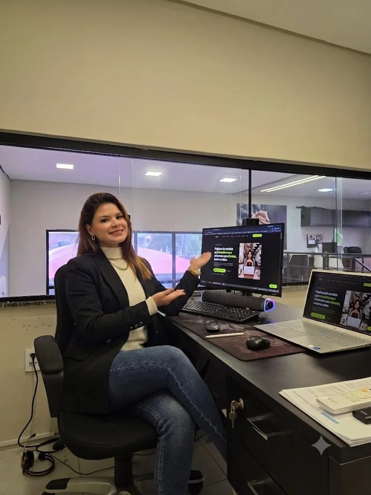

Você não sabe se está lucrando de verdade
Fatura, paga fornecedor, paga equipe — e chega no dia 30 sem saber se sobrou R$500 ou R$15 mil. Sem esse número, todo preço que você cobra é um chute, e todo investimento é uma aposta.
O Comando 360 cria o sistema completo da sua empresa: CRM, financeiro e operação num painel só, em tempo real. Chega de fechar o mês sem saber se lucrou, de lead esfriando no WhatsApp e de preço decidido no chute.
Não é falta de esforço. É um destes 4 furos silenciosos no seu negócio — veja se algum dói.
Fatura, paga fornecedor, paga equipe — e chega no dia 30 sem saber se sobrou R$500 ou R$15 mil. Sem esse número, todo preço que você cobra é um chute, e todo investimento é uma aposta.
De cada 10 leads que chegam no seu WhatsApp, quantos você diria agora, sem olhar, em que etapa estão? Sem funil, contato vira conversa solta — e o cliente que ia fechar essa semana esfria enquanto ninguém responde.
Esse mês veio indicação e fechou bem. Mês que vem, ninguém indicou nada — e o faturamento despenca sem aviso. Sem canal previsível de cliente novo, você não tem negócio: tem loteria mensal.
Toda hora gasta copiando planilha ou refazendo relatório é uma hora que não foi gasta vendendo. A IA já faz metade dessa tarefa hoje — sozinha, sem folha de pagamento extra.
Cada sistema alimenta o mesmo painel central. Você para de pular entre ferramenta solta, planilha e grupo de WhatsApp só pra saber se o próprio negócio foi bem essa semana.
Transforma clique em conversa no seu WhatsApp, carregando em menos de 2s.
Tráfego pago que já chega pronto pra comprar — não curioso gastando seu orçamento à toa.
Responde e qualifica lead mesmo de madrugada, sem você online.
Leads, financeiro, produtividade e resultado — tudo em tempo real, num lugar só.
Gestão do seu jeito, não do jeito que o software genérico manda — acessível do celular, onde você realmente trabalha.
Funil visual — cada lead com etapa, dono e prazo. Ninguém mais esquecido na conversa.
Conecta os sistemas que você já usa e tira de você a tarefa repetitiva que hoje consome horas por semana.
Quantos leads entraram hoje? De onde vieram? Quanto caiu na conta? O que a equipe produziu? O painel responde em segundos — sem caçar planilha, sem cobrar ninguém.
Prévia do tipo de painel que você recebe · números ilustrativosVocê não precisa entender de tecnologia. Eu conduzo cada etapa — você só acompanha os números melhorando.
A gente conversa no WhatsApp. Eu entendo onde o dinheiro vaza, onde o lead se perde e o que dá pra automatizar — sem custo e sem compromisso.
GratuitoDesenho o sistema pro seu caso: landing page, CRM, automação, dashboard — só o que faz sentido pra você. Você aprova antes de eu construir.
Coloco tudo no ar, conecto seu WhatsApp e as ferramentas que você já usa, e testo cada detalhe antes de entregar na sua mão.
Depois da entrega, ajusto com base nos números reais. Você passa a acompanhar leads, financeiro e resultado sempre atualizados — nunca mais no escuro.
Cada negócio, um sistema com a cara dele — da landing page que captura ao painel que controla a operação.



O Comando 360 não vende software de prateleira. Os mesmos sistemas desta página rodam empresas reais todos os dias — transporte executivo, gestão de frota e controle financeiro — antes de chegar até você.
Landing page, CRM, automação, dashboard — cada peça conectada num painel só, feito pro seu jeito de trabalhar. Você para de operar no escuro e passa a decidir com número: lead que se perdia, dinheiro sem controle e tarefa repetitiva viram coisa do passado.
Depende do que a sua empresa precisa — por isso o primeiro passo é o diagnóstico grátis. Você sai dele com uma proposta fechada, sem surpresa, e aprova antes de qualquer construção começar.
O prazo é definido junto com você no diagnóstico. Começamos pela peça de maior impacto no seu caixa (em geral o painel ou o CRM), então você vê resultado antes do projeto inteiro terminar.
Não. A gente cuida da parte técnica de ponta a ponta. Você acompanha tudo em português claro, aprova cada etapa e recebe o sistema pronto pra usar.
Não perde nada. Aproveitamos o que já funciona e migramos seus dados pro painel novo — você só para de depender de planilha solta e de informação espalhada.
Sim. Tudo roda no navegador, do computador e do celular, sem instalar nada — você acompanha sua empresa de onde estiver.
Não te deixamos na mão: acompanhamos os números reais de uso e ajustamos o sistema com base neles. É o mesmo cuidado que temos com os sistemas das nossas próprias empresas.
Me chama no WhatsApp. A gente faz o diagnóstico do seu negócio e eu te mostro exatamente o que dá pra organizar, automatizar e medir, sem custo pra começar.
Resposta no mesmo dia · Fortaleza-CE e todo o Brasil